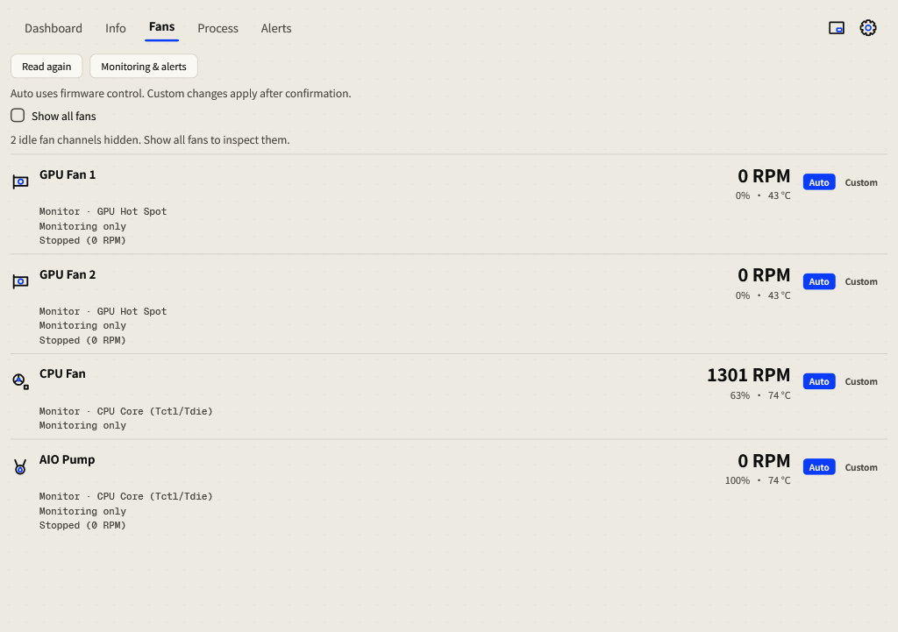
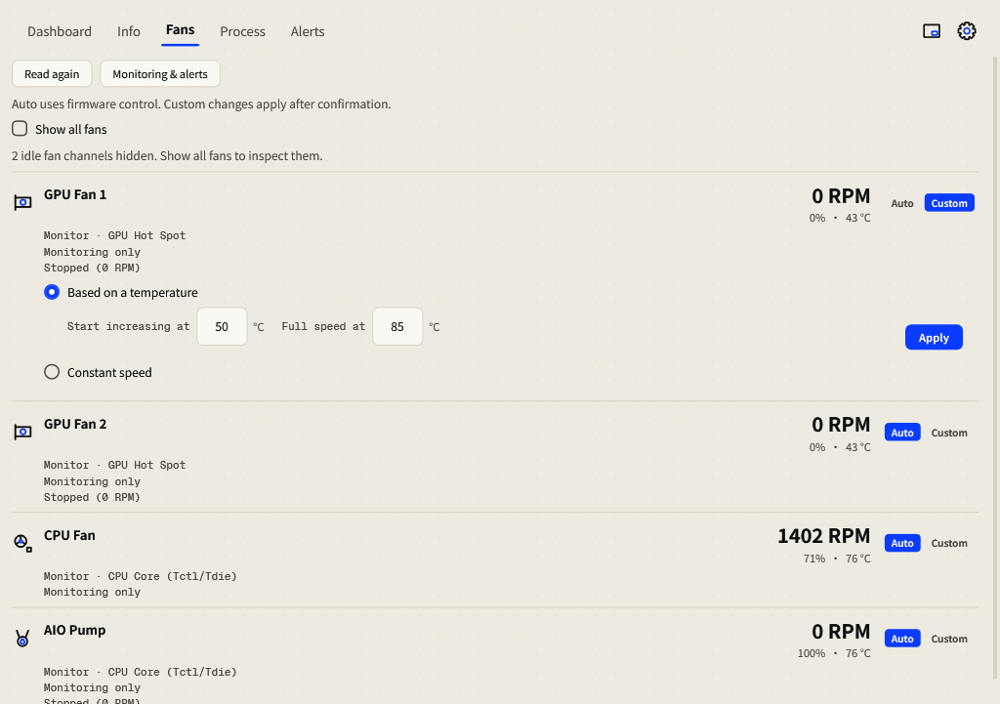

Fans & cooling
Inspect the cooling hardware your PC exposes and configure supported fan controls.
Check your fans first
- Open Fans in the top navigation.
- Read each fan’s hardware name, temperature and temperature source, RPM and control status.
- Enable Show all fans to inspect hidden idle channels.
- Leave the fan on Auto while identifying it. Rename a generic header when you know what it is connected to.

Auto and Custom
| Mode | Behavior |
|---|---|
| Auto | The hardware firmware owns fan speed. This is the default. |
| Custom: temperature curve | Speed ramps from the fan’s minimum to maximum between your start and maximum temperatures. |
| Custom: constant speed | A fixed percentage within the range supported by that fan. |
Configure a temperature curve
- On a supported controllable fan, choose Custom. The editor opens beneath that fan.
- Choose Based on a temperature. Set Start increasing at and Full speed at for your cooling setup, or choose Constant speed.
- Review the fields and press Apply. Changes in the editor do not control hardware until applied.
- Check the status: Custom control applied confirms the command took effect. Observe the temperature and RPM.
- Choose Auto to return speed control to firmware.

A GPU fan follows its own GPU temperature. A motherboard fan follows CPU temperature. There is no Follow selector or cross-category fallback when that temperature is missing. Constant mode uses a fixed speed instead of a temperature ramp.
Understand the status
| Status | Meaning / action |
|---|---|
| Firmware control | Auto is active and firmware owns speed. |
| Waiting to apply | The command has not yet taken effect. |
| Custom control applied | The custom command was accepted. |
| Temperature unavailable; firmware control | The required temperature is missing; control returns to firmware. |
| Driver refused custom control; firmware control | The hardware/driver did not accept the command. Use Auto and check support. |
| Could not restore firmware control; retrying | The release failed and Momo is retrying; check the cooling state. |
| Monitoring only | Readings are available, but custom hardware control is not active. |
| Stopped (0 RPM) | A valid zero RPM; it may be a device stop mode. |
| RPM unavailable | No valid RPM reading; this is different from a stopped fan. |
Moving to another computer
Portable histories and general preferences travel, but fan profiles return to firmware Auto on another PC. Hardware-specific labels and calibration must be checked again. On a normal application exit, Momo releases software fan control.